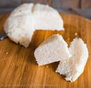

Have you ever wondered how to make perfect, firm, and smooth Kenyan Ugali? Well I'm going to take you step by step on how to cook a great pot
Boil the Water:
Get your base liquid ready. In a sufuria (cooking pot), bring 3 to 4 cups of water to a rolling boil over medium-high heat.Add the First Portion of Flour:
Start the cooking process. Pour in a small handful of maize meal flour into the boiling water and let it bubble for a minute to create a light porridge base.Add the Main Flour & Stir:
Build the core mass. Gradually add the remaining maize meal flour while stirring vigorously with a wooden cooking stick (mwiko) to prevent lumps from forming.Knead and Turn:
Smooth out the texture. Keep pressing and turning the mixture against the sides of the pot with your mwiko on medium heat until the ugali pulls away cleanly from the edges and forms a firm, cohesive lump.Simmer and Steam:
Ensure thorough cooking. Reduce the heat slightly, cover the pot for about 2 to 3 minutes to let it steam through, then give it a final turn.Serve Hot:
Plate and enjoy. Turn the sufuria upside down onto a clean flat plate or hot pot to release the ugali in a neat dome shape, and serve hot with your favorite stew or greens.